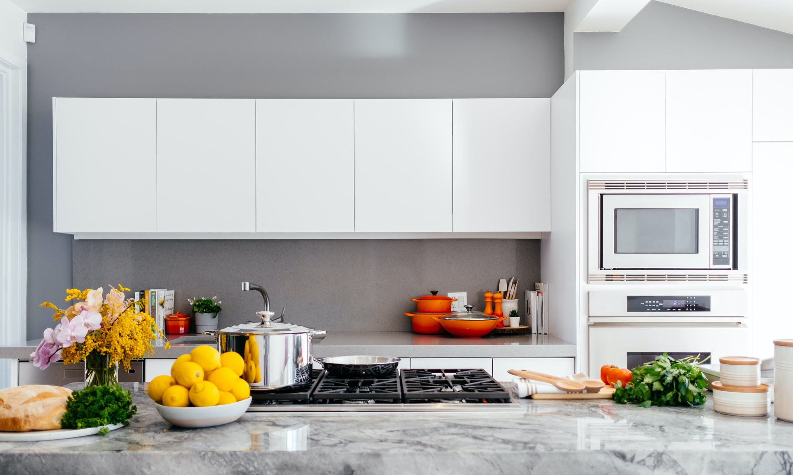

Choose a user:
-- choose a user --
-- filter by type --
All Recipes
WHAT TO COOK
FAVORITE RECIPES
YOUR GROCERY LIST

Time to cook
DINNER
LUNCH
BREAKFAST
Icons made by
Gregor Cresnar
from
www.flaticon.com
Icons made by
Freepik
from
www.flaticon.com